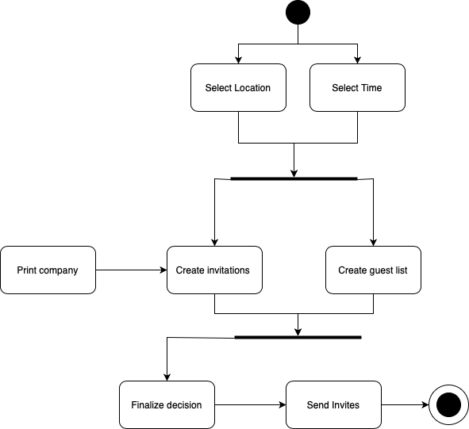

The Chris Taylor Project
Welcome to my blog. Subscribe and get my latest blog post in your inbox.

Software Rights
Fred is a worker for a ski resort in North Carolina. His job is to report if there might be hazardous conditions for skiing throughout the...
Read more →
To Test Or Not To Test
Fred is a worker for a ski resort in North Carolina. His job is to report if there might be hazardous conditions for skiing throughout the...
Read more →

Mythical Man Month
A common theme of Mythical Man Month seemed to be that throwing more developers at a problem is, most of the time, the worst way to solve that problem...
Read more →

UML Diagrams
This blog posts contains scenerios in which specific UML diagrams are helpful to explain the relationships between objects and processes...
Read more →
Development Process
Below are four different systems where a developer would have to suggest the most appropriate generic software process model that might be used as a basis for managing the development...
Read more →

Reflections on Testing
A non-functional requirement is a constraint on the system as a whole while a functional requirement is how the system should react to certain inputs and how it will behave in different situations. An engineer may create a ...
Read more →

Reflections on Software Failure
After reading over the articles on the failures of software it is clear that the common theme behind them is TEST! TEST! TEST! The articles span a wide variety of topics such as healthcare overdoses, space travel...
Read more →
Availability, Reliability, and Safety
They either deal with availability or reliability problems which mean they need a high amount of redundancy and diversity. A system that is supporting fault tolerance needs to have multiple systems that...
Read more →

Reflections on Software Engineering Practices
When reading the three different articles, No Silver Bullet, Kode Vicious, and Google Code Repo, there seemed to be a common theme behind the design of codebases, including upkeep, initial setup, and...
Read more →
Professional Software and Ethics
A software should have these four traits, maintainability, dependability and security, efficiency, and acceptability. All of these traits are essential to what a professional software should possess...
Read more →
Introduction
When starting college I was dead set on becoming a musician. I had the full support of my family but I was unsure on how I would make enough money. During my first year I found that I did not like to get music shoved...
Read more →